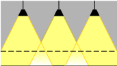
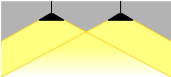
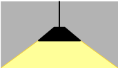
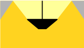

4- Utilance
C’est le rapport du flux lumineux atteignant le plan à éclairer au flux sortant du luminaire.
Dans le domaine photométrique, elle est exprimée en %.
Ainsi, à chaque type de bâtiment ou de local vont correspondre des valeurs d’utilance en fonction des possibilités de réflexion des parois.
De même, la forme du local intervient au moyen de l’indice :
Sa valeur dépend donc :
De la nature du luminaire en sorte que la répartition de la lumière, son degré de diffusion répondent aux critères de confort.
Un classement des appareils (cf. UTE C 71.121) a été établi en fonction de l’ouverture du cône de lumière émise. Il en résulte qu’à chaque classe correspond un rapport précis :
Interdistance entre luminaire / Hauteur au dessus du plan utile = l / h
on appelle aussi ce rapport l’uniformité (Le tableau 2 donne les valeurs à ne pas dépasser.)
Indice du local : La nature du local influe de sorte que la forme du local peut
modifier la vision.
\[k=axb/h(a+b)\ \] K est appelé indice du local
a et b étant les dimensions du local et h la hauteur du luminaire par rapport au plan utile (aussi appelée hauteur utile).
Détermination du facteur de réflexion
La lumière émise est réfléchie en partie par les parois.
Selon la couleur des surfaces, le coefficient de réflexion doit être adapté.
En fonction du constructeur, le facteur de dépréciation peut-être donné de manière différente. (Ex pour le plâtre vous trouverez 0.8 ou 8).
Détermination du facteur de dépréciation
Détermination de l’utilance au moyen des tableaux constructeurs
Le facteur d'utilance se détermine à l'aide de tableaux comportant trois variables :
la valeur de j, facteur de suspension ;
la valeur de k, indice du local ;
les facteurs de réflexion des parois.
Il existe autant de tableaux que de classes de luminaires.
Utilisation du tableau des utilances.
1° Choisir le tableau correspondant à la classe du luminaire de A à j, plus T.
2° Retenir le tableau correspond à j, soit j = 0, soit j = 1/3.
3° Rechercher le facteur U à l'intersection de la ligne donnant la valeur k, et de la colonne correspondant aux trois facteurs de réflexion.
Classes et catégories de luminaires
La norme NF C 71.121 donne pour les luminaires une répartition en 20 classes repérées de A à T.
La catégorie du luminaire est définie par la répartition du flux lumineux sur une sphère selon 5 cônes repérés de F1 à F5, il s'agit d'angles solides, la totalité de la sphère représente 4 π.
F1 correspond à un éclairement très localisé.
F5 correspond à un éclairage indirect.
Le classement s'effectue selon la répartition donnée dans le tableau ci-contre.
 |  |  |  | |
Éclairage intensif, catégorie A. | Éclairage extensif, catégorie J. | Direct | Indirect | Mixte |
Le rapport espacement/hauteur définit la classe du luminaire | Le rapport espacement/hauteur définit la classe du luminaire | Distribution du flux lumineux | Distribution du flux lumineux | Distribution du flux lumineux |